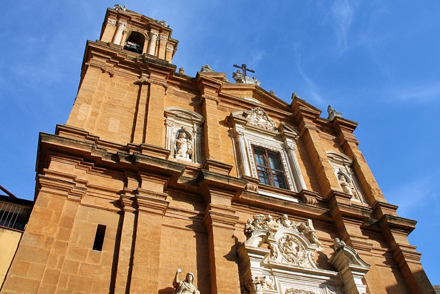
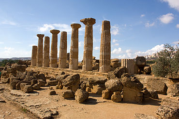
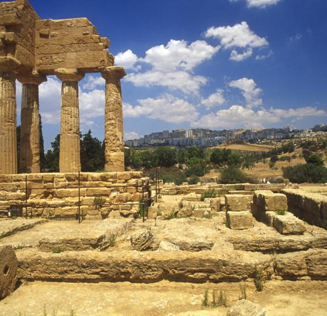

Retreived from wikipedia.org
Retreived from planetware.com
Retreived from wikipedia.org
Retreived from Travelguide.michelin.com
| Image | Location | Description |
|---|---|---|
|
Retreived from wikipedia.org |
Temple of Concordia | An ancient Greek temple in the Valle dei Templi. It is the largest and best preserved temple in Sicily. |
| 
Retreived from planetware.com |
San Lorenzo | 18th century church in the heart of the historical center of Agrigento. |
| 
Retreived from wikipedia.org |
Tempio di Heracles | Originally built in 500BC and destroyed in 406 BC. It was rebuilt by the Romans later to be destroyed by an earthquake. |
| 
Retreived from Travelguide.michelin.com |
Tempio di Castore e Polluce | Named after the non-identical twins Castor and Pollux. |